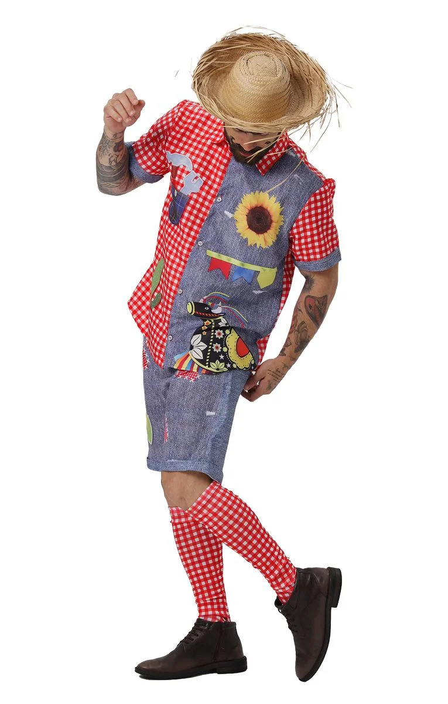
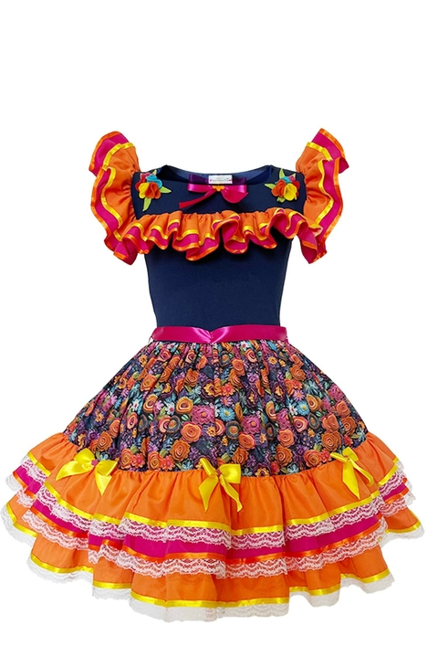

🌽 Campo e Cidade: Uma Parceria de Sabores e Tradições
O campo traz seus saberes, colheitas e histórias; a cidade recebe com curiosidade, respeito e alegria. A Festa Junina é uma ponte que une esses dois mundos, permitindo a troca de experiências através da culinária, dos trajes e das celebrações típicas.
🎉 A Festa Junina
No céu brilham balões, no chão fogueira a arder,
Entre risos e canções, a festa vai acontecer.
Com pipoca e quentão, o povo vem festejar,
Junho chegou no sertão, é tempo de celebrar!

👒 Trajes Juninos: Charme e Tradição
As roupas típicas são um dos grandes símbolos da Festa Junina! Os trajes masculinos trazem camisas xadrez, chapéus de palha e calças remendadas. Já os femininos encantam com vestidos rodados, laços coloridos e maquiagem com pintinhas no rosto.


🍴 Sabores Juninos: 5 Comidas Típicas
- Pamonha – Feita com milho verde, é cozida na palha e tem sabor marcante.
- Canjica – Um doce cremoso feito com milho branco, leite e açúcar.
- Bolo de Milho – Tradicional nas festas, é macio e perfumado.
- Pé-de-moleque – Um doce crocante de amendoim e rapadura.
- Cuscuz – Muito versátil, pode ser doce ou salgado.
Sabores Juninos: 5 Comidas Típicas